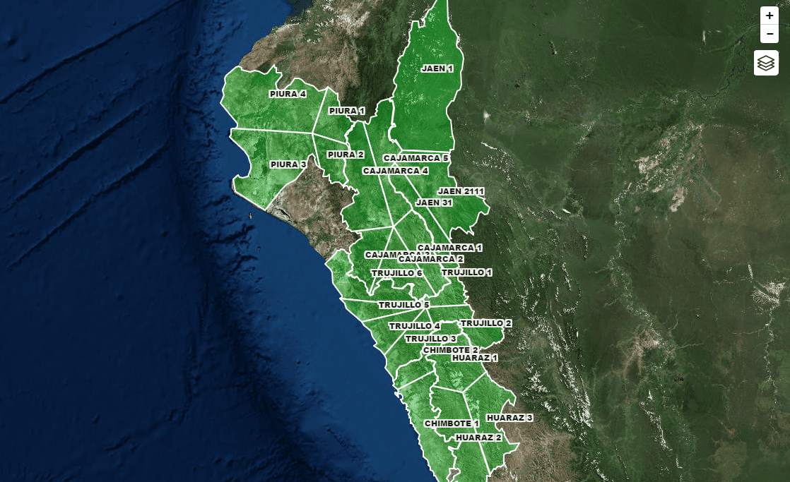

Financiera · Interbank
Carteras definidas por ubicación y cercanía
En el área de Créditos por convenio, Interbank organizó su cartera según la ubicación y proximidad de sus clientes potenciales (docentes) para visitar más en menos tiempo.
-25%de tiempo promedio en visitas a clientes potenciales